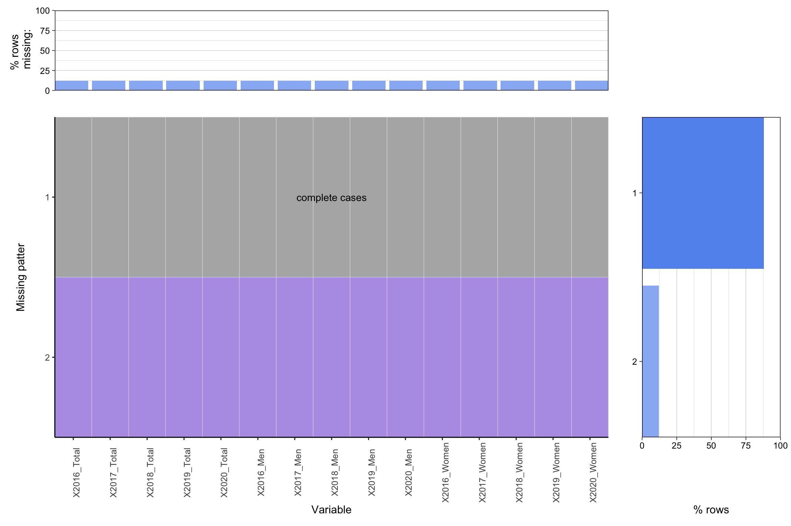
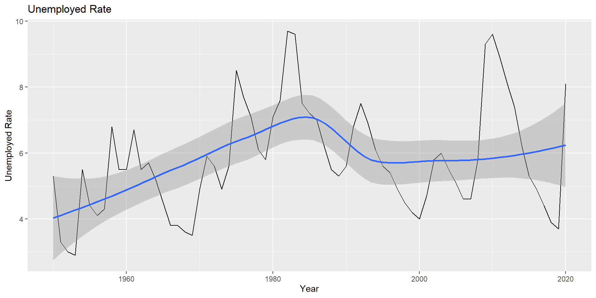

Chapter 5 Results
5.1 Overview of Overall Civilian Labor Force
Before we dive into the questions about the factors influencing the employment, it would be better that we have an overview of overall civilian labor force in order to understand the data following more clearly.

Here, Civilian Noninstitutional Population is defined as persons 16 years of age and older residing in the 50 states and the District of Columbia, who are not inmates of institutions (e.g., penal and mental facilities, homes for the aged), and who are not on active duty in the Armed Forces. Civilian Labor Force is defined as all persons in the civilian noninstitutional population classified as either employed or unemployed. The detailed definition of person’s employment state can be found here.
As we can see, Civilian Noninstitutional Population keeps increasing over time, as same as Civilian Labor Force and Civilian Labor Force Employed.
The percentage here is calculated by dividing population of Civilian Labor Force and Civilian Labor Force Employed with Civilian Noninstitutional Population. The first statistic also can be referred as Labor Force Participation Rate.
Both lines of percentage show a similar pattern. Despite of the increasing trend in overall population, the percentage of Civilian Labor Force and Civilian Labor Force Employed reach peak at 2000 and then decreased.
A detailed analysis of Labor Force Participation Rate can be find here, which is not the topic we tend to discuss here. It should be noticed that Labor Force Participation Rate is influenced by social, demographic, and economic trends. Therefore, it’s complicated to explain the change of this statistic over time.

The Unemployment Rate is defined by the ratio of unemployed to the civilian labor force expressed as a percent [i.e., 100 times (unemployed/labor force)]. Therefore, the Unemployment Rate indicates what degree of people who try but can not find a job.
As we can see, the Unemployment Rate changes rapidly over time and in 2020 it reached another peak again. Despite the constant change over time, the Unemployment Rate hovers around 6% in general
5.2 Discrimination in Employment
Now we want to find out whether it exists discrimination in employment in different industries in recent period.
5.2.1 Sex Discrimination
First we examine the sex discrimination.

From a whole review, we can see that women significantly had less Civilian Labor Force Employed Percent of population.


5.2.2 Race Discriminations